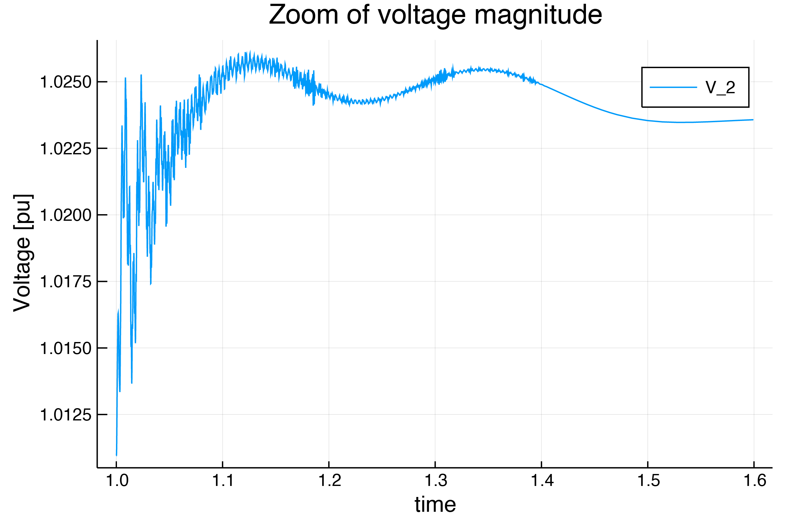

Tutorial: Dynamic Lines
This tutorial will introduce an example of considering dynamic lines in LITS. Note that this tutorial is for LITS 0.3.0. Future versions will have dedicated functions to find an equilibrium point using a Power Flow method without relying in a guess of the initial condition to run a non-linear solver.
This tutorial presents a simulation of a three-bus system, with an infinite bus (represented as a voltage source behind an impedance) at bus 1, a one d- one q- machine on bus 2 and an inverter of 19 states, as a virtual synchronous machine at bus 3. The perturbation will be the trip of two of the three circuits (triplicating its resistance and impedance) of the line that connects bus 1 and bus 3. This case also consider a dynamic line model for connection between buses 2 and 3.
It is recommended to check Tutorial 1: OMIB first, since that includes more details and explanations on all definitions and functions.
This tutorial can be found on LITS/Examples repository.
Step 1: Package Initialization
using LITS
using PowerSystems
using Sundials
const PSY = PowerSystemsStep 2: Data creation
To start we will define the data structures for the network.
Buses and Branches
nodes_case9 = [
PSY.Bus(1, "Bus 1", "REF", 0, 1.02, (min = 0.94, max = 1.06), 138),
PSY.Bus(2, "Bus 2", "PV", 0, 1.00, (min = 0.94, max = 1.06), 138),
PSY.Bus(3, "Bus 3", "PQ", 0, 1.00, (min = 0.94, max = 1.06), 138),
]
branch_case9 = [
PSY.Line(
"Line1",
true,
0.0,
0.0,
Arc(from = nodes_case9[1], to = nodes_case9[3]),
0.01,
0.12,
(from = 0.1, to = 0.1),
100,
1.04,
),
PSY.Line(
"Line2",
true,
0.0,
0.0,
Arc(from = nodes_case9[1], to = nodes_case9[2]),
0.01,
0.12,
(from = 0.1, to = 0.1),
100,
1.04,
),
PSY.Line(
"Line3",
true,
0.0,
0.0,
Arc(from = nodes_case9[2], to = nodes_case9[3]),
0.02,
0.9,
(from = 0.5, to = 0.5),
100,
1.04,
),
]
#Trip of Line 1. Triplicates its impedance
branch_case9_fault = [
PSY.Line(
"Line1",
true,
0.0,
0.0,
Arc(from = nodes_case9[1], to = nodes_case9[3]),
0.03,
0.36,
(from = 0.03, to = 0.03),
100,
1.04,
),
PSY.Line(
"Line2",
true,
0.0,
0.0,
Arc(from = nodes_case9[1], to = nodes_case9[2]),
0.01,
0.12,
(from = 0.1, to = 0.1),
100,
1.04,
),
PSY.Line(
"Line3",
true,
0.0,
0.0,
Arc(from = nodes_case9[2], to = nodes_case9[3]),
0.02,
0.9,
(from = 0.5, to = 0.5),
100,
1.04,
),
];Injection devices
loads_case9 = [
PowerLoad("Bus1", true, nodes_case9[1], PSY.LoadModels.ConstantPower, 0.5, 0.1, 1.5, 0.8),
PowerLoad("Bus2", true, nodes_case9[2], PSY.LoadModels.ConstantPower, 1.0, 0.3, 1.5, 0.8),
PowerLoad("Bus3", true, nodes_case9[3], PSY.LoadModels.ConstantPower, 0.3, 0.1, 0.5, 0.3),
]
inf_gen_case9 = [PSY.Source(
"InfBus", #name
true, #availability
nodes_case9[1],#bus
1.00, #VR
0.0, #VI
0.000005, #Xth
)]Dynamic injection devices
First we define our generator data:
######## Machine Data #########
### Case 2: 4th Order Model with AVR (3-bus case) ###
case9_machine = PSY.OneDOneQMachine(
0.0, #R
1.3125, #Xd
1.2578, #Xq
0.1813, #Xd_p
0.25, #Xq_p
5.89, #Td0_p
0.6, #Tq0_p
100.0,
) #MVABase
######## Shaft Data #########
### Shafts for Gen ###
case9_shaft = PSY.SingleMass(
3.01, #H (M = 6.02 -> H = M/2)
0.0,
) #D
######## PSS Data #########
cases_no_pss = PSY.PSSFixed(0.0)
######## TG Data #########
### No TG for Cases 1, 2, 3, 4 ###
case9_no_tg = PSY.TGFixed(1.0) #eff
######## AVR Data #########
### AVRs for Case 2, 3, 4 and 5 ###
case9_avr = PSY.AVRTypeI(
20.0, #Ka - Gain
0.01, #Ke
0.063, #Kf
0.2, #Ta
0.314, #Te
0.35, #Tf
0.001, #Tr
5.0, #Vrmax
-5.0, #Vrmin
0.0039, #Ae - 1st ceiling coefficient
1.555,
) #Be - 2nd ceiling coefficient
### Case 7 Generators ###
case9_gen = PSY.DynamicGenerator(
1, #Number
"Case9Gen",
nodes_case9[2], #bus
1.0, # ω_ref,
1.0124, #V_ref
0.6, #P_ref
0.0, #Q_ref
case9_machine, #machine
case9_shaft, #shaft
case9_avr, #avr
case9_no_tg, #tg
cases_no_pss, #pss
);and for the inverter:
converter = PSY.AvgCnvFixedDC(
138.0, #Rated Voltage
100.0,
) #Rated MVA
dc_source = PSY.FixedDCSource(1500.0) #Not in the original data, guessed.
filt = PSY.LCLFilter(
0.08, #Series inductance lf in pu
0.003, #Series resitance rf in pu
0.074, #Shunt capacitance cf in pu
0.2, #Series reactance rg to grid connection (#Step up transformer or similar)
0.01,
) #Series resistance lg to grid connection (#Step up transformer or similar)
pll = PSY.PLL(
500.0, #ω_lp: Cut-off frequency for LowPass filter of PLL filter.
0.084, #k_p: PLL proportional gain
4.69,
) #k_i: PLL integral gain
virtual_H = PSY.VirtualInertia(
2.0, #Ta:: VSM inertia constant
400.0, #kd:: VSM damping coefficient
20.0, #kω:: Frequency droop gain in pu
2 * pi * 50.0,
) #ωb:: Rated angular frequency
Q_control = PSY.ReactivePowerDroop(
0.2, #kq:: Reactive power droop gain in pu
1000.0,
) #ωf:: Reactive power cut-off low pass filter frequency
outer_control = PSY.VirtualInertiaQdroop(virtual_H, Q_control)
vsc = PSY.CombinedVIwithVZ(
0.59, #kpv:: Voltage controller proportional gain
736.0, #kiv:: Voltage controller integral gain
0.0, #kffv:: Binary variable enabling the voltage feed-forward in output of current controllers
0.0, #rv:: Virtual resistance in pu
0.2, #lv: Virtual inductance in pu
1.27, #kpc:: Current controller proportional gain
14.3, #kiv:: Current controller integral gain
0.0, #kffi:: Binary variable enabling the current feed-forward in output of current controllers
50.0, #ωad:: Active damping low pass filter cut-off frequency
0.2,
) #kad:: Active damping gain
case9_inv = PSY.DynamicInverter(
2, #number
"DARCO", #name
nodes_case9[3], #bus location
1.0, #ω_ref
0.8, #V_ref
0.5, #P_ref
-0.3, #Q_ref
100.0, #MVABase
converter, #Converter
outer_control, #OuterControl
vsc, #Voltage Source Controller
dc_source, #DC Source
pll, #Frequency Estimator
filt, #Output Filter
);Defining the Dynamic System
#Create the system
sys = PSY.System(
100.0, #Base MVA
frequency = 50.0, #Nominal frequency in Hz
)
#Add the buses to the system
for bus in nodes_case9
PSY.add_component!(sys, bus)
end
#Add the branches to the system
for br in branch_case9
PSY.add_component!(sys, br)
end
#Make Line3 a dynamic line
make_dynamic_branch!(branch_case9[3], sys)
#Add the loads to the system
for load in loads_case9
PSY.add_component!(sys, load)
end
#Add the sources (infinite gens) to the system
for source in inf_gen_case9
PSY.add_component!(sys, source)
end
#Add the inverter
PSY.add_component!(sys, case9_inv)
#Add the generator
PSY.add_component!(sys, case9_gen)Step 3: Build the simulation and initializing the problem
First, we construct the perturbation, by properly computing the new Ybus:
#Obtain perturbed Ybus
sys2 = PSY.System(
100.0, #Base MVA
frequency = 50.0, #Nominal frequency in Hz
)
#Add the buses to the system
for bus in nodes_case9
PSY.add_component!(sys2, bus)
end
#Add the fault branches to the system
for br in branch_case9_fault
PSY.add_component!(sys2, br)
end
#Make Line3 a dynamic line
make_dynamic_branch!(branch_case9_fault[3], sys2)
#Compute the Ybus
Ybus_fault = PSY.Ybus(sys2)[:,:]
#Construct the perturbation
perturbation_Ybus = ThreePhaseFault(
1.0, #change will occur at t = 1.0s
Ybus_fault, #new Ybus
);Now, we check the indexing
#Time span of our simulation
tspan = (0.0, 30.0)
#Define Simulation
sim = Simulation(
sys, #system
tspan, #time span
perturbation_Ybus, #Type of perturbation
initialize_simulation = false #keyword argument to not find initial conditions.
)
ext = PSY.get_ext(sim.system) #Obtain ext information of the system
ext["global_index"] #Showcase the global indexing of zThis is a clear example on which a flat start is not enough to properly initialize the system, so we provide a guess:
x0_guess = [
1.00, #V1_R
1.00, #V2_R
1.00, #V3_R
0.0, #V1_I
-0.01, #V2_I
-0.01, #V3_I
0.0, #δω_vsm
0.2, #δθ_vsm
0.025, #qm
0.0015, #ξ_d
-0.07, #ξ_q
0.05, #γ_d
-0.001, #γ_q
0.95, #ϕ_d
-0.10, #ϕ_q
1.004, #vpll_d
0.0, #vpll_q
0.0, #ε_pll
0.1, #δθ_pll
0.5, #id_cv
0.0, #iq_cv
0.95, #vod
-0.1, #voq
0.49, #iod
-0.1, #ioq
1.0, #eq_p
0.47, #ed_p
0.6, #δ
1.0, #ω
2.1, #Vf
0.28, #Vr1
-0.39, #Vr2,
1.0, #Vm
0.5, #IL1_R
0.5, #IL1_I
]and with that we can compute our initial condition:
sim = Simulation(
sys, #system
tspan, #time span
perturbation_Ybus, #Type of perturbation
initial_guess = x0_guess #initial guess.
)Step 4: Run the simulation
#Run the simulation
run_simulation!(sim, #simulation structure
IDA(), #Sundials DAE Solver
)Step 5: Explore the solution
using Plots
volt = get_voltagemag_series(sim, 2)
plot(volt, xlabel="time", ylabel="Voltage [pu]", label="V_2")
zoom = [(volt[1][ix], volt[2][ix]) for (ix, s) in enumerate(volt[1]) if (s > 0.90 && s < 1.6)]
plot(zoom, xlabel="time", ylabel="Voltage [pu]", label="V_2")⠀
⠀